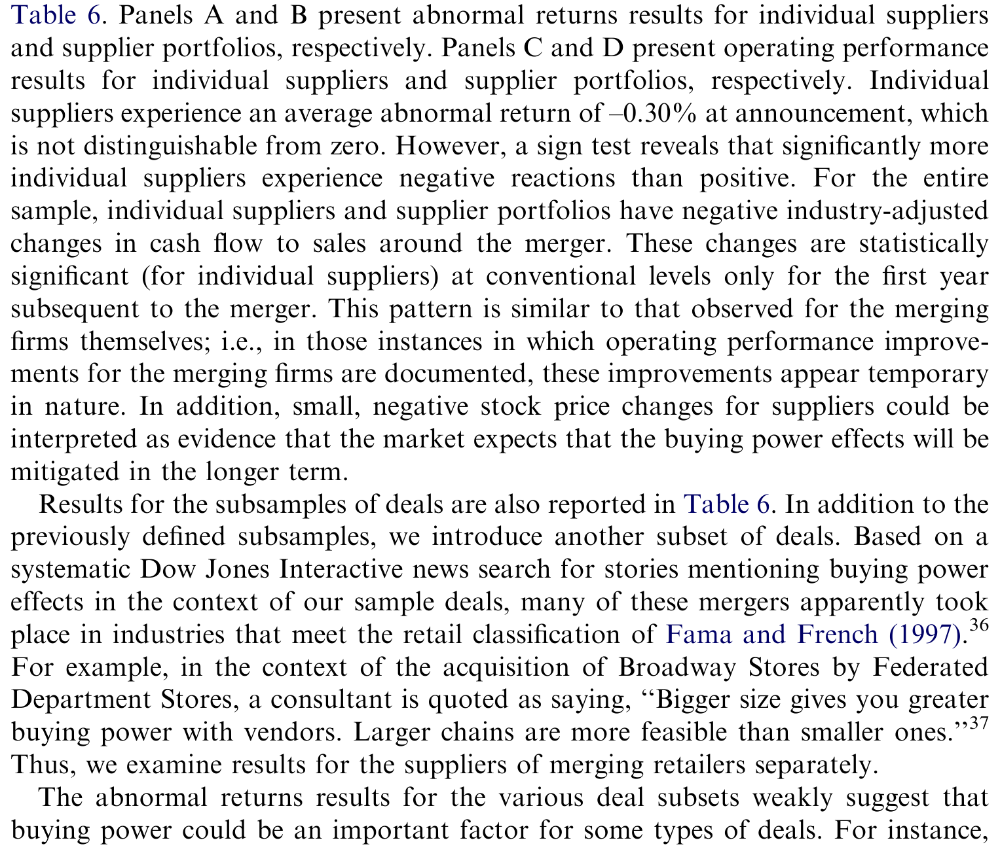
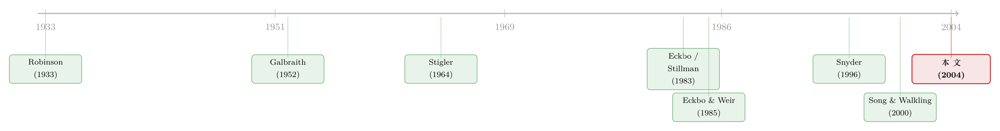

并购的钱，到底是从谁兜里掏出来的？
本文读的是 Fee & Thomas (2004, JFE)：把一桩横向并购的赢家与输家，沿着产业链「上下游」摊开来看——他们直接找到了并购方真实的公司客户、供应商和同业对手，发现并购的收益主要不来自「合谋抬价坑客户」，而来自「联合采购压价」压向了上游供应商，尤其是那些被淘汰掉的供应商。
1 一个老问题：合并到底「赚」了谁的钱
一家公司去并购它的同行，股价往往会涨。这件事本身没什么悬念。真正让人争了几十年的，是另一个问题：这笔涨上来的钱，到底是从哪里冒出来的？
经理人自己给的答案永远是体面的那一个——「协同」「规模经济」「效率提升」。但反垄断当局从来不买账。在他们眼里，横向并购 (horizontal merger) 是一件危险的事：两个原本要竞争的对手合在一起，最自然的结果就是更容易合谋 (collusion)——一起减产、一起抬价，从消费者兜里多掏钱（这是 Stigler, 1964 的经典逻辑）；或者反过来，一起压低采购量、压低进货价，从供应商兜里多榨钱（这是 Robinson, 1933 早就点出的「买方垄断」一面）。
于是同一个事实——「合并后股价涨了」——背后藏着两套截然相反的故事。一套说这是做大了饼（效率），对社会是好事；另一套说这是重新切了饼（市场势力），是把别人的福利转移给了股东。
问题在于，这两套故事光看并购方自己的股价，根本分不开。涨，可能是因为效率，也可能是因为势力。你需要别的证据。
2 一个被搁置了二十年的提议
那么，去哪儿找别的证据？
接着，一个自然的问题是：如果收益真的来自市场势力，那它一定会外溢到别人身上。合谋抬价，受伤的是下游客户；合谋压价，受伤的是上游供应商；而无论哪种合谋，都需要同业对手配合，所以对手 (rival) 应该跟着沾光。反过来，如果收益纯粹来自效率，这些「局外人」原则上不该受到系统性的影响。
这个思路其实不新。早在 Eckbo (1983) 就写下过一句近乎方法论宣言的话：
「原则上，我们可以通过考察并购方的公司客户和投入品供应商的异常收益，来区分合谋假说与效率假说。」
但这句话提出来之后，二十年里几乎没人能真正照做。原因很现实：你得知道某家公司具体的客户是谁、供应商是谁。在没有大样本供应链数据的年代，这几乎是不可能完成的任务。所以过去的研究只能退而求其次，盯着同业对手的股价做文章（Eckbo, 1983; Stillman, 1983; Eckbo & Weir, 1985）。
但真正关键的一步在于：本文两位作者动手建了一套数据集，把 1980–1997 年间发起横向并购的公司，逐一对应到它们重要的公司客户、供应商和同业对手。这是据他们所知第一次在大样本里，真的去看横向并购对实际上下游企业的影响。Eckbo 的提议，终于被人当真去做了一遍。
3 识别策略：让「局外人」替你做判断
本文没有跑双重差分，也没有找工具变量。它的识别力量，来自一张预测表——不同的收益来源，会在并购方、对手、客户、供应商这四类企业身上留下不同的指纹。
这正是全文的方法论核心，也是论文的 Table 1。作者把四种假说和它们对四类企业的预测一字排开：
- 生产效率 (productive efficiency)：并购方获益（成本下降）；对手影响不定；客户受益或不受影响（成本节约部分让利）；供应商基本不受直接影响。
- 垄断合谋 (monopolistic collusion)：并购方与对手都获益（瓜分垄断租）；客户受损（减产、提价）；供应商影响不定偏负。
- 买方垄断合谋 (monopsonistic collusion)：并购方与对手获益；供应商受损（被压价）；客户零到负。
- 采购效率／抗衡势力 (purchasing efficiency / countervailing power)：并购方获益（投入成本下降）；供应商的影响不对称——留下的可能无碍，被淘汰的会受伤。
注意「买方垄断合谋」和「采购效率／抗衡势力」的微妙差别——这是本文最精巧的地方。两者都让并购方靠压低进货价赚钱，对供应商整体都是坏消息。但在「合谋」的经典故事里，买方垄断者只按一个垄断价进货，不挑供应商，所以理论上没有哪个供应商应该过得更好；而在「采购效率」的故事里，并购方把原有供应商摆上擂台互相压价竞标（Snyder, 1996; Gal-Or, 1999; Inderst & Wey, 2002），赢家（留下的供应商）可能不受伤甚至受益，输家（被淘汰的）才遭殃。供应商之间的不对称，就成了区分两者的钥匙。
有了这张表，识别逻辑就清楚了：你不需要直接观测「合谋」这个看不见的东西，你只要看看四类企业的真实反应，落在表里哪一行。
作者用两类证据来填这张表：一是并购公告与反垄断挑战事件前后的累计异常收益（标准事件研究 (event study)）；二是并购前后的经营业绩变化，主要看现金流利润率 (cash-flow margin)，并用 Barber & Lyon (1996) 式的业绩匹配法剔除行业与规模的影响。两套证据，一个看市场的预期，一个看事后的实绩。
4 反转一：合谋的指纹，根本对不上
先看下游。
如果并购真的让一伙人更容易合谋抬价，那么客户应该是直接的受害者。但作者发现：客户在并购公告期的股价反应不显著，并购后客户的经营业绩变化也微乎其微。更狠的是，哪怕只看那些高度依赖并购方进货的客户——按理说最该被「提价」坑到的一群——结果依然如此。
那同业对手呢？这里出现了第一个反转。对手确实在公告期录得了正的异常收益——这看起来像合谋（大家一起分垄断租）。但作者紧接着追问：如果收益真来自合谋，那么当反垄断当局出手挑战这桩并购、合谋前景被打掉时，对手的股价应该跌。
可数据里，对手在反垄断挑战时并没有显著的负反应。这一点和 Eckbo (1983) 当年的发现一脉相承：对手的正反应，更像是市场认为「同行也可能通过未来并购获得效率」（Song & Walkling, 2000 的「收购概率假说」支持这一点），而不是在给合谋租定价。
于是，把客户和对手的证据合在一起，结论很干脆：增强的反竞争合谋，不是这批并购收益的主要来源。 反垄断当局最担心的那个故事，在数据里站不住。
5 反转二：钱是从上游供应商兜里出来的
合谋的故事被否掉了，那收益到底从哪来？
镜头转向上游。作者发现：并购之后，供应商的现金流利润率出现了显著的、立竿见影的下滑。这说明——某种形式的买方势力 (buying power)，确实是横向并购的重要收益来源。下游一合并，采购的天平就压向了上游。
但这还不够。买方势力本身有两副面孔：是反竞争的「买方垄断合谋」，还是效率增进的「采购效率／抗衡势力」？光看供应商整体受损，两者都能解释。
然后，真正关键的一步来了——作者把供应商拆开看：被并购方淘汰 (terminated) 的，和被保留 (retained) 的。
- 被淘汰的供应商：在并购公告期录得显著为负的异常收益，并购后现金流也显著恶化。
- 被保留的供应商：市场份额显著上升，而异常收益和经营业绩没有显著变化。
这张「供应商个体异常收益」的表，就是全文证据的落点：

Table 6: Panels A and B present abnormal returns results for individual suppliers
这种不对称，恰恰是「采购效率／抗衡势力」假说的独家指纹，而不是「买方垄断合谋」的。回想第 3 节那个区别：如果是经典的买方垄断合谋，所有供应商都该一视同仁地受伤；可现实是赢家没事、输家遭殃。作者由此判断：这更像是并购方把原有供应商架上擂台、逼它们压价竞标的结果——最有效率的供应商赢得了订单（甚至抢到了更大的份额），出局的才付出了代价。
文中那个经常被引用的例子很传神：Staples 1997 年宣布要收购 Office Depot 时，高管放话「我们现有的所有[供应商]关系，都将面临调整和重新谈判」。一个具体的细节是，Staples 当时从松下买卷笔刀，Office Depot 从 Hunt 买；两家供应商都从 Staples 管理层的表态里读出了同一个信号——只有报价最低的那个能留下。Staples 和 Office Depot 预计仅靠这种供应商竞争，每年就能砍掉近 $150 million 的采购成本。无独有偶，惠普-康柏并购案预期的 $2.5–3 billion 年度节约里，相当一部分也来自「对供应商下手更狠」——一位分析师的原话是：「惠普会在价格上把供应商往死里压。他们以前是好好先生，现在玩真的了。」
作者特意强调：「玩真的」和「玩不公平」是两码事。供应商被压价、利润率下滑，本身并不构成反竞争的证据——它完全可能是效率改善的正常副产品。这正是本文想纠正的一个常见误读：看到供应商受伤就喊「买方垄断」，逻辑上是不成立的。
6 横截面：谁更疼，疼在何处
多元回归进一步确认并丰富了上面的图景，几个横截面规律很有意思：
- 越依赖，越受伤：那些对并购方的销售收入更依赖（即转产、转客户的成本更高）的供应商，并购后现金流利润率的下滑显著更大。议价桌上「走不掉」的一方，吃亏更多。
- 行业越集中，势力越强：当并购方所在行业相对集中时，买方势力的效应更明显；而当供应商所在行业也更集中时，供应商的现金流下滑反而更大。后者尤其值得玩味——它和 Galbraith (1952) 的「抗衡势力」(countervailing power) 理论对上了：下游联合采购，恰恰是去抗衡一个本就不那么竞争的上游。
- 零售业是重灾区：回归证实了坊间印象——在本文样本期内，买方势力效应在零售商之间的并购中尤为重要。
- 钱确实换了手：对于「并购方处在集中行业」的子样本，供应商的现金流下滑，与并购方自身的现金流上升（及销货成本下降）显著相关。一边减、一边增，这正是「买方势力是收益来源」的直接对账。
还有一个时间上的细节：供应商的业绩恶化，最强的证据出现在并购后的第一年，之后逐渐减弱。作者给的解释是——市场预期这种压制是暂时的，长期看上游企业会用自己的并购等战略动作来反制下游的整合。这也解释了一个表面的矛盾：业绩数据里清清楚楚的供应商受损，在公告期股价里却没那么明显地体现出来——因为市场早把它当成一笔会被未来抵消掉的暂时性损益。
7 文献脉络
把这条线索捋一捋，会看到一个很漂亮的学术接力。
最早是两位经济学家奠定的概念地基：Robinson (1933) 在《不完全竞争经济学》里讲清了买方垄断 (monopsony)，Stigler (1964) 的寡头理论则给「合谋抬价」立了规矩。Galbraith (1952) 又从另一侧提出「抗衡势力」——下游集中未必是坏事，它可能去制衡一个本就不竞争的上游。这三块，构成了本文 Table 1 里那几行假说的源头。

到了实证层面，真正把「用局外人的股价反应来识别合谋」这套方法立起来的，是 Eckbo (1983) 与 Stillman (1983)，随后 Eckbo & Weir (1985) 用反垄断挑战事件做了进一步检验。但他们都困于数据，只能看同业对手。本文的贡献，正是补上了 Eckbo 当年那句「应该去看客户和供应商」的提议里缺失的那两类企业——把识别从「对手」一路推到了真实的上下游。而在理论一侧，Snyder (1996)、Gal-Or (1999)、Inderst & Wey (2002) 关于「买方势力下供应商竞争与不对称效应」的模型，恰好为本文「淘汰／保留」的不对称发现提供了对应的理论语言。
值得一提的是，几乎同期的 Shahrur (2002) 用行业层面的数据问了非常接近的问题（关于这条平行的研究线，可参见《把饼做大，还是把同行的饭碗端走？——一桩横向并购的「三方验尸」》 与《并购是为了把饼做大，还是把价抬高？——答案藏在「产品像不像」里》）。本文与之互补：Shahrur 走的是行业聚合的路子，本文胜在点对点地认出了真实的客户与供应商个体，从而能做「淘汰 vs. 保留」这种只有微观数据才支持的切分。
8 评论与延伸（Q&A + 研究方向）
(a) 几个可能的疑问
Q：供应商利润率下滑，凭什么就一定是「并购方造成的」？会不会只是行业本身在走下坡？
这正是作者用 Barber & Lyon (1996) 业绩匹配法要处理的问题——把同行业、同规模、同业绩起点的对照组的变化扣掉，留下的才是归因于并购的「异常」部分。当然这不是完美的因果识别，但它把「整个供应商行业一起变差」这类共同冲击大体过滤掉了。
Q：「淘汰 vs. 保留」会不会是内生的？业绩本来就要垮的供应商，更容易被淘汰。
这是本文识别上最该担心的一点。被淘汰可能不是「输掉了价格竞标」，而是它本来就不行、活该被换掉——那样的话，淘汰组的业绩恶化就未必是并购造成的。作者的公告期股价证据能部分缓解这一担忧：异常收益是市场在公告那一刻对新信息的反应，而非对存量基本面的反映；但「淘汰这件事是否可预期」仍是个开放问题。
Q：既然供应商明显受损，为什么不直接判定为反竞争、该被反垄断拦下？
因为本文最核心的修正就在这里：供应商受损 ≠ 反竞争。在「买方垄断合谋」下，所有供应商一起受伤；而数据显示赢家无碍、输家遭殃的不对称，更像效率增进的采购竞争。把供应商利润下滑当成反垄断证据，会冤枉掉很多其实在提升效率的并购。
Q：对手股价上涨，难道不就是合谋的铁证吗？
这恰恰是 Eckbo (1983) 早就点破、本文再次确认的陷阱。对手上涨也可以是「市场认为同行也能通过未来并购获得效率」（Song & Walkling, 2000）。真正能区分的是反垄断挑战时的反应——若是合谋租，挑战应让对手下跌；数据里没有，于是合谋故事被削弱。
Q：为什么受损在「业绩」里清晰、在「股价」里却淡？
作者的解释是市场把这种压制看作暂时的——预期上游迟早会用自己的并购等手段反制。所以事后实现的利润下滑（尤其集中在并购后第一年）很明显，但事前定价里被「未来会被抵消」这一预期稀释了。
Q：这套结论能外推到今天吗？样本毕竟是 1980–1997 年。
要小心。彼时零售业整合是买方势力的典型场景，但如今的「买方势力」更多体现在平台、数据与流通环节，机制可能不同。本文的方法（用真实上下游的不对称反应去识别收益来源）比它的具体数字更经得起时间考验。
(b) 几个可能的研究问题与提案
1. 把这套「上下游不对称」搬到公司债／信用市场。 【经济故事】并购方靠压榨供应商赚到的钱，本质上是把风险与现金流从上游转移到了下游。那么被淘汰／高依赖的供应商，其信用利差是否在并购公告后显著走阔，而并购方自身的利差收窄？这能从债券市场再验证一次「钱换了手」。 【可行性】高。需要 TRACE 的公司债成交数据 + 供应链关系数据（Compustat Segment 或 FactSet Revere），事件研究框架现成，识别策略可直接沿用本文的「淘汰／保留」切分。
2. 外资持有人会不会改变买方势力的方向？ 【经济故事】当供应商有大量外资机构持股时，它在与下游并购方谈判时的「韧性」可能不同——外资可能更不愿接受割肉式压价，也可能更快撤资。供应商的所有权结构，是否调节了并购后利润率下滑的幅度？ 【可行性】中。需要把供应商的机构持股（尤其外资比例，FactSet/13F + 国别）并到本文式的上下游样本上；识别上要担心持股结构本身的内生性。
3. 供应链「流动性」视角：被淘汰供应商的资产甩卖。 【经济故事】被踢出局的供应商，往往要处置专用性资产。如果同一行业里多家供应商同时被并购潮淘汰，会不会触发火线甩卖、压低专用资产价格？这把「买方势力」与「资产流动性」两条线接起来。 【可行性】中。需要资产处置／产能数据（如行业层面的二手设备价格、关停公告），识别难点在于把「并购引发的淘汰」与「行业周期性退出」分开。
4. 谁是「留下的赢家」？供应商竞标胜出的可预测性。 【经济故事】本文说留下的是「更有效率」的供应商，但没有刻画事前哪些特征预测了胜出（成本结构、议价地位、专用性、地理临近）。把胜出建成一个可预测的横截面，能直接检验「擂台竞标」机制。 【可行性】高。在已有上下游样本上加供应商财务与关系特征，跑一个胜出概率回归即可；关键是把样本扩到足够多的并购事件。
9 我的判断
这篇论文真正的贡献，不在某个惊人的系数，而在方法论上的一次兑现：它把 Eckbo 搁置了二十年的提议落了地，第一次在大样本里用真实的上下游企业去给「并购收益从哪来」这个老问题定性。结论也足够克制而有力——合谋的指纹对不上，钱主要从上游供应商那里来，而且是以「效率增进的采购竞争」而非「赤裸的买方垄断」的方式。「淘汰 vs. 保留」的不对称，是全文最聪明的一刀。
对识别，我最在意两点。其一是淘汰的内生性：被换掉的供应商可能本就要垮，公告期股价证据缓解了一部分，但没有彻底解决；若能找到一个外生地决定「谁被淘汰」的变量（比如并购方与某供应商的历史关系因无关原因中断），这把刀会更锋利。其二是供应链数据的覆盖偏差——能被识别出来的「重要客户/供应商」，往往是大客户、大供应商，小而依赖度高的那一批可能系统性地落在样本之外，而他们恰恰最可能受伤，这会让估计偏保守。
我接下来最想看到的，是把这套框架接到信用市场上去：股价讲的是预期，利润率讲的是实现，而债券利差能告诉我们这场「钱的转移」有没有改变上下游各自的违约风险。如果被淘汰供应商的利差真的随之走阔，而并购方走窄，那本文「钱换了手」的故事，就在第三个市场上又被验证了一遍。
参考文献
Barber, B., Lyon, J. (1996). Detecting abnormal operating performance: the empirical power and specification of test statistics. Journal of Financial Economics 41, 359–399.
Blair, R., Harrison, J. (1993). Monopsony: Antitrust Law and Economics. Princeton University Press.
Bruner, R. (2002). Does M&A pay? A survey for the decision-maker. Journal of Applied Finance 12, 48–60.
Eckbo, B.E. (1983). Horizontal mergers, collusion, and stockholder wealth. Journal of Financial Economics 11, 241–273.
Eckbo, B.E., Wier, P. (1985). Antimerger policy under the Hart-Scott-Rodino Act: a reexamination of the market power hypothesis. Journal of Law and Economics 28, 119–149.
Galbraith, J. (1952). American Capitalism: The Concept of Countervailing Power. Houghton Mifflin.
Gal-Or, E. (1999). Mergers and exclusionary practices in health care markets. Journal of Economics and Management Strategy 8, 315–350.
Healy, P., Palepu, K., Ruback, R. (1992). Does corporate performance improve after mergers? Journal of Financial Economics 31, 135–175.
Inderst, R., Wey, C. (2002). Buyer power and incentives. Unpublished working paper, London School of Economics.
Robinson, J. (1933). The Economics of Imperfect Competition. Macmillan and Co.
Shahrur, H. (2002). Industry structure and horizontal takeovers: analysis of wealth effects on rivals, suppliers, and corporate customers. Unpublished working paper, Georgia State University.
Snyder, C. (1996). A dynamic theory of countervailing power. RAND Journal of Economics 27, 747–769.
Song, M., Walkling, R. (2000). Abnormal returns to rivals of acquisition targets: a test of the 'acquisition probability hypothesis'. Journal of Financial Economics 55, 143–171.
Stigler, G. (1964). A theory of oligopoly. Journal of Political Economy 72, 44–61.
Stillman, R. (1983). Examining antitrust policy towards horizontal mergers. Journal of Financial Economics 11, 224–240.